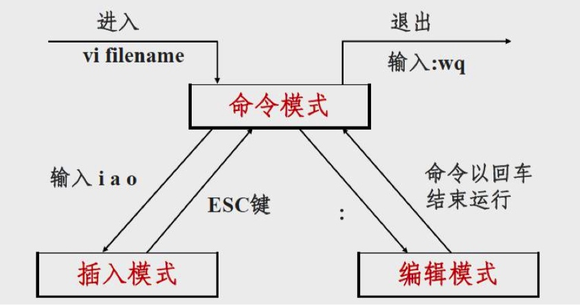

vim 学习
开发中如果遇到修改配置文件的时候经常用到 vim .今天把常用到的 vim 命令进行简单的总结
开始学习 vim
在 terminal 中输入 vimtutor -g zh 就会开始 vim 学习教程
简单总结
vim 编辑器中有三种状态模式

vim 编辑器的启动与退出
| 命令 |
释意 |
| $ vim |
直接进入编辑环境 |
| $ vim myfile |
进入编辑环境并打开(新建)文件 |
| :q |
退出 vi 编辑环境 |
文件操作
| 命令 |
释意 |
| :w |
保存对 vim 编辑器中已打开文件的修改 |
| :w myfile |
将 vim 编辑器中的内容另存为指定文件名 |
| :wq |
对 vim 编辑器中的文件进行保存并退出 vim 编辑器 |
| :q! |
放弃对文件内容的修改,并退出 vi 编辑器 |
光标移动操作
| 命令 |
光标操作 |
释意 |
| 光标移动 |
h |
向左移动光标 |
|
l |
向右移动光标 |
|
k |
向上移动光标 |
|
j |
向下移动光标 |
|
|
|
| 翻页 |
Ctrl + f |
向下翻整页 |
|
Ctrl + b |
向上翻整页 |
|
Ctrl + u |
向上翻半页 |
|
Ctrl + d |
向下翻半页 |
|
|
|
| 行内移动光标 |
^ |
将光标快速跳转到本行的行首字符 |
|
$ |
将光标快速跳转到本行的行尾字符 |
|
|
|
| 文件内跳转 |
:set nu |
在编辑器中显示行号 |
|
:set nonu |
取消编辑器中的行号显示 |
|
1G(gg) |
跳转到文件的首行 |
|
G |
跳转到文件的末尾行 |
|
#G |
跳转到文件中的第#行 |
编辑操作
| 命令 |
光标操作 |
释意 |
| 进入输入模式 |
i |
在当前光标处进入插入状态 |
|
a |
在当前光标后进入插入状态 |
|
o |
在当前行的下面插入新行,光标移动到新行的行首,进入插入状态 |
|
O |
在当前行的上面插入新行,光标移动到新行的行首,进入插入状态 |
|
c(n)w |
删除当前光标到所在单词尾部的字符,并进入插入状态 |
|
c$ |
删除当前光标到行尾的字符,并进入插入状态 |
|
c^ |
命令删除当前光标之前(不包括光标上的字符)到行首的字符,并进入插入状态 |
|
|
|
| 删除操作 |
x |
删除光标处的单个字符 |
|
(n)dd |
删除光标所 n 行 |
|
:3,5 d |
删除从第 3 行到第 5 行的内容 |
|
dw |
删除当前字符到单词尾(包括空格)的所有字符 |
|
de |
删除当前字符到单词尾(不包括单词尾部的空格)的所有字符 |
|
d$ |
删除当前字符到行尾的所有字符 |
|
d^ |
删除当前字符到行首的所有字符 |
|
J(大写) |
删除光标所在行行尾的换行符,相当于合并当 前行和下一行的内容 |
|
|
|
| 拷贝和粘贴 |
(n)yy |
复制当前行整行的内容到 vi 缓冲区 |
|
:3,6 co(m) 12 |
复制(剪切)3-6 行,到第 12 行处 |
|
p |
读取 vi 缓冲区中的内容,并粘贴到光标当前的位置(不覆盖文件已有的内容) |
|
u |
取消最近一次的操作,并恢复操作结果可以多次使用 u命令恢复已进行的多步操作 |
|
U |
取消对当前整行进行的所有操作 |
|
Ctrl + r |
对使用 u 命令撤销的操作进行恢复 |
查找与替换操作
| 命令 |
光标操作 |
释意 |
| 查找 |
/word |
从上而下在文件中查找字符串“word” |
|
?word |
从下而上在文件中查找字符串“word” |
|
n |
定位下一个匹配的被查找字符串 |
|
N |
定位上一个匹配的被查找字符串 |
|
|
|
| 替换 |
:s/old/new |
将当前行中查找到的第一个字符“old” 串替换为“new” |
|
:s/old/new/g |
将当前行中查找到的所有字符串“old” 替换为“new” |
|
:#,#s/old/new/g |
在行号“#,#”范围内替换所有的字符串“old”为“new” |
|
:%s/old/new/g |
在整个文件范围内替换所有的字符串“old”为“new” |
简易配置
输入 vim ~/.vimrc 该文件是一个隐藏文件,如果没有则 创建它,该文件中保存一些,vim 的常用配置。
set nu //代码显示行号
syntax on //关键词高亮显示
set cindent //c 语法自动缩进
set autoindent //新行自动缩进
set shiftwidth=4 //缩进宽度 4
set tabstop=4 //tab 键宽度 4
set softtabstop=4 //制表符宽度 4
set nobackup //不备份